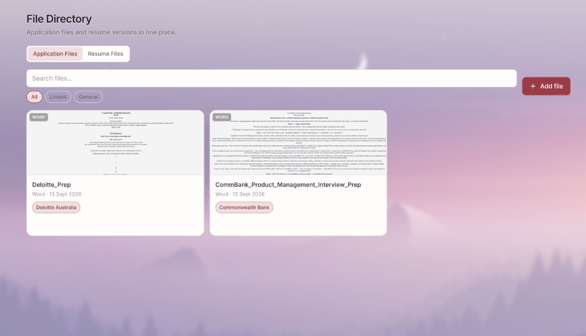
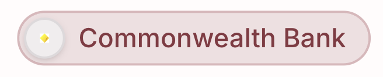
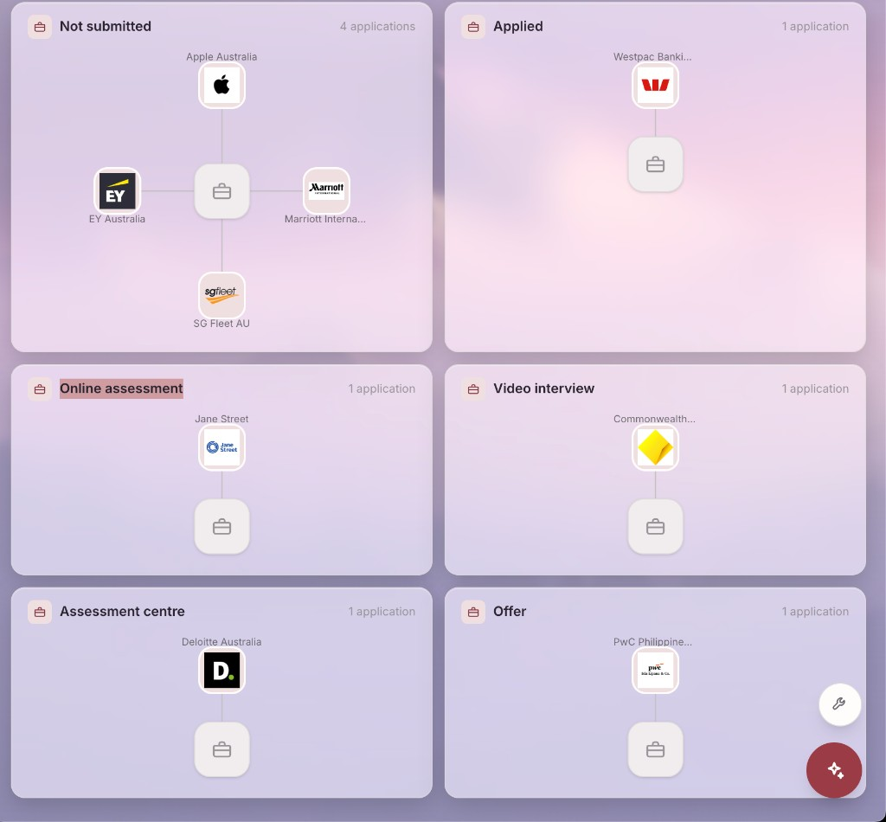
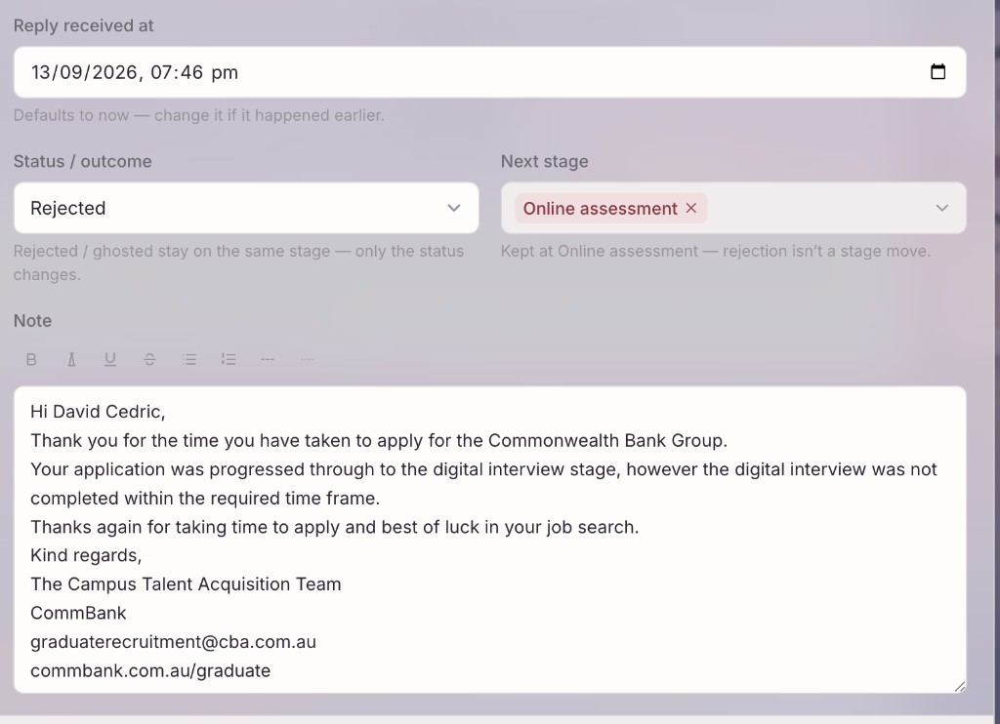
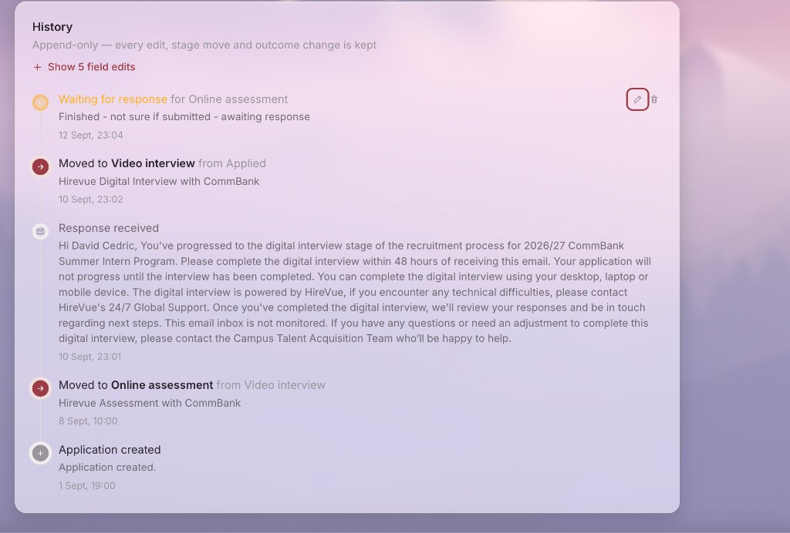
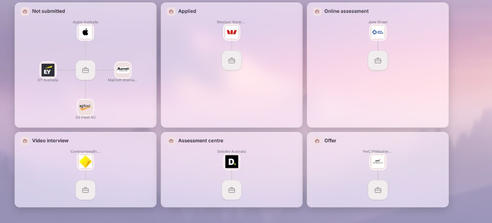
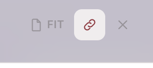
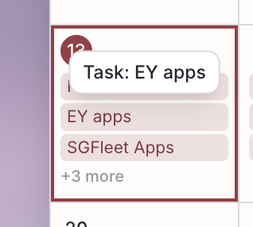
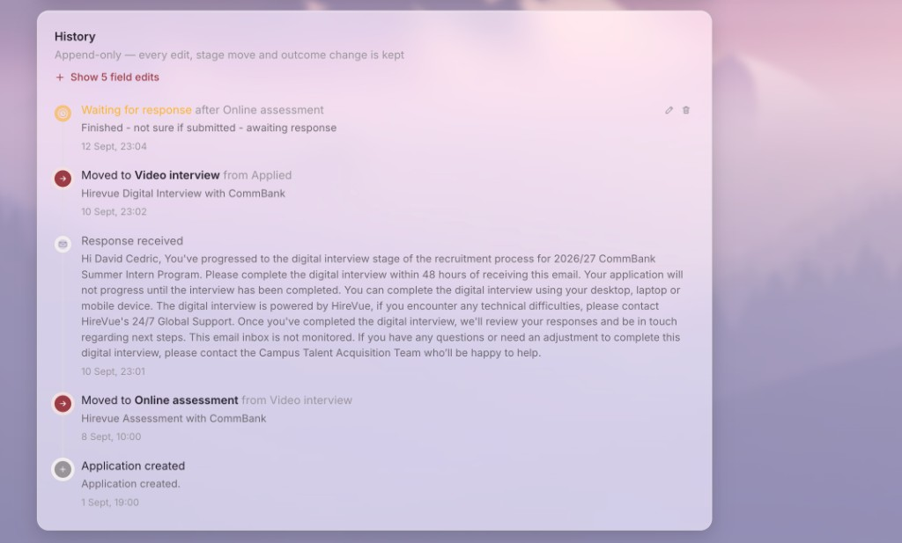

File Directory, calendar depth, short names, and LAN HTTPS
Everything since the v1.1 waiting-state / documents / network baseline: one document home,
company short names end-to-end, a calendar that carries deadlines and stage history,
catch-up cards with last-messaged separate from last-met, aligned bubble screens,
one upload and viewer pattern, ticket notifications both ways, and a home-network HTTPS path
so weather and installs work on other devices on the same Wi-Fi.
180files touched
+18klines (approx.)
v1.1baseline commit
LANhttps ready
What this release is for
Keep documents findable
Say company names the short way
See the hunt on a calendar
Share the Mac over home Wi-Fi
Ship the working tree
File Directory
Resumes become a single place for every document you keep for the job hunt.
new
File Directory replaces Resumes
Nav item is File Directory (/files). Old /resumes bookmarks redirect to the Resume Files tab. Application documents move into a shared library; resumes stay as their own file type.
One screen instead of splitting docs on the application from resume versions.
new
All / Application Files / Resume Files
Three tabs. All mixes both, with Recent / Oldest / Name sort. Application Files keeps Linked / General / tag filters. Resume Files keeps Active, variant type, and Archived.

File Directory — Application Files with company chips and searchnew
Scoped search on every tab
Same search bar style as Network and Applications. All searches both kinds; Application Files only library docs; Resume Files only resumes. Query sticks in the URL.
new
Link a file to an application, a company, or neither
Upload form uses Nothing / An application / A company. Company-linked files show a short-name chip with logo. General files use tags.
improved
Smaller cards, counts instead of walls of chips
Resume cards show N applications · N roles · N companies. Hover (or focus) lists them with logos. Uniform card size across the grid.
improved
Thumbnails, comments, downloads by label
PDF/Word thumbnails on cards (cached after first render). Viewer has a comments panel that saves to resume notes or file description. Downloads save as the label/title plus the real extension. Editable File name is reference-only.
fixed
PDF preview reliability
pdf.js no longer fights React StrictMode on one canvas. Media embeds no longer send X-Frame-Options: DENY, so in-app PDF reading works over the LAN HTTPS proxy.
Company names everywhere
Short form is the default label. Full legal name stays for search and tooltips.
improved
display_name at the source
Backend Company.display_name prefers short_name, then name. Serializers for applications, listings, event logs, network, catch-ups, todos, calendar, experiences, dashboard, and mentions all use it.
Stops every screen inventing its own truncation.
improved
Pickers and chips
Company pickers show short name + logo; full name is searchable but not drawn. Shared CompanyChip with looser padding and a larger mark. Add firm on Log application offers a short-name field when missing (suggested acronym).

Company chip — short name, visible logoimproved
Clickable company surfaces + Back
Network cards, bubbles, catch-up tags, and File Directory chips link to the company page. Back restores the previous list/filter/popup state via remembered from.
Applications
Waiting, bubbles, and outcomes line up with how you actually track firms.
improved
Bubble modes
Bubbles first and default. Modes: Current, Last Stage Reached, By Region. Accepted and Rejected sit as outcome cards after Offer rather than fake stages.

Applications bubblesimproved
Waiting for response
Waiting is tied to a stage you choose and can edit. Marking done is logged. Badge contrast fixed. Wrong-stage waiting corrected.
improved
Title Case labels system-wide
Assessment Center, Video Interview, Online Assessment, No Region Tagged, catch-up formats, relationship labels — first letter of each word.
improved
Offers tile
Dashboard Offers opens applications with outcome Offer received or Accepted (matches the stat).
improved
Got a reply / history notes
Reply flow surfaces outcome context. Notes use the same resizable rich-text controls as the rest of the app.
Calendar
More of your pipeline lands on the calendar, colour-coded, with a read view first.
new
Week and day timelines
Month, week, and day views. Expand all / collapse all for +more rows. Reorder within a day. Drag across days (all-day moves silently; timed opens edit).
new
Catch-ups, deadlines, stage moves
Catch-ups appear on the day they happened. Application deadlines use urgency colours and company logos. Stage/outcome log entries appear on the day they were recorded. Each family is a toggle in Show.
new
Colour legend + timed ranges
Filter chips double as the legend. Timed items show start–end on the chip.

Calendar with colour-coded domainsnew
Read card before edit
Click opens a view card (date, badges, Linked to with logos/photos, notes). Edit is a separate button. Faces and company marks link out with Back restoring the popup.
improved
Todo description hint
Subtitle removed; description help text: use @ to link an application, person, or company.
Catch-ups and contacts
Cards for scanning, last met vs last messaged, and photo-backed pickers.
new
Cards view (default, stateful)
Face, name, company chip, meet-up details, label strip with format icon, View minutes. Filters and search live in the URL.

Catch-up cardsnew
Last met vs last messaged
Messages format updates last messaged + channel (LinkedIn / Email / Text / Other) only — does not change last met, does not roll next chat, does not appear on the calendar. Other formats still update last met. Both dates clearable and nullable on the person form.
improved
Format and person pickers
Icon chip row for formats (shared in form and filters). Who did you meet shows photos. Dead subtitles removed.
Network and Job Directory
Bubbles align; industries get out of the way; Places remembers All Places first.
improved
Network bubbles and legend
Dense packing matches Job Directory. Legend (No longer here / Recruiter / Interviewer) sits in a glass pill so it stays readable on any wallpaper. Company hubs and chips link through.
Network bubblesimproved
Companies tab like Network
No wrapping card. Toolbar on the page; industry rings full width. Industries managed from a modal. Roles collapse to N roles listed with a proper popover. Places defaults to All Places, listed first, stateful.

Job Directory company ringsimproved
Job Directory copy
Long subtitles moved into info hints. Header shows how many companies are logged.
Documents, profile, uploads
One viewer and one upload gesture across the app.
new
In-app DocumentViewer
Blur modal, thumbnails, paper size, download, comments. Read vs Original kept for Word/text; removed for PDF/image so links stay clickable.
new
UploadDialog everywhere
Pick → preview → save. Photos, logos, school/issuer icons, resumes, library files, education/cert/extra-curricular attachments, experience photos. Zones that accept either kind use one combined mark (photo + document + plus).

Shared upload dialognew
Upload zone motion
Radar brand pulse on empty attach panels. Plus (and paperclip) idle spin; hover stops the idle motion, grows and thickens the mark.
improved
Profile attachments parity
Education, certifications, extra-curriculars match experience: icons, attachment galleries, same viewer. Image change is a popup with current → new preview.

Profile / attachmentsimproved
Preferred name
Profile preferred name feeds the nav and Hi greeting (falls back to first name).
Mentions, rich text, filters
What you type is what you see after save.
fixed
Bold/italic across line breaks
Markers that spanned a newline used to show raw markers after save. Inline formatting now runs across the whole paragraph.
improved
@mentions as links
Resolved people/companies/applications/places render with face/logo/pin and Back-aware links. Commas inside venue tags no longer split the mention.
new
FilterDrawer
Calendar Show, Catch-up Format, File Directory filters fold behind one button. Phones unfold down; desktop unfolds sideways with a springy chip animation. Open state remembered per page.
Dashboard, notifications, developer mode
Tickets ring both ways; calendar reminders behave like before; mobile stops stretching.
improved
Waiting badge on company panel
Amber clock when a live application is waiting — beside green offer and red reject.

Dashboardimproved
Region map on phones
Pinch-to-zoom, larger zoom controls, global min-width fixes so maps and bubbles no longer blow out horizontal scroll.
new
Ticket notifications both directions
Background watcher (~6s, also on tab focus). New tickets, chat both ways, status moves. Own actions do not notify you. Tickets feed is separate from the everyday bell. Clear all respects the active feed.
new
Done requires a reply
Developer Done opens What changed? and only closes via Mark done and reply.
improved
Talk to a Dev
Dev mode on by default. Quick-access rung only while Dev mode is on. Floating secondary launcher removed. Tools icon on log and ticket alerts. Phone log is a near-full-screen sheet.
improved
Notification banners
Fixed dark card with white text on every theme, rotating colour rim and breathing shadow. Calendar ding rings twice; deep-links open the item popup.
LAN hosting and appearance
Same Wi-Fi access without pretending this is a public deploy.
new
./run.sh local and ./run.sh lan --https
One script for both servers. LAN mode binds to the Mac IP. HTTPS uses mkcert when available so geolocation/weather work on other devices.
fixed
Media URLs over HTTPS
Vite proxies forward X-Forwarded-Proto; Django trusts it so photo/logo URLs are https and Windows no longer blocks them as mixed content.
improved
Access log
Coloured API lines with username and client IP.
improved
Appearance defaults
Calibri / Times New Roman, Rouge theme, login liquid-glass defaults, location permission prompt with insecure-origin guidance.
fixed
Known: CSRF on login from another device (HTTPS LAN)
Same-origin HTTPS proxy sends session cookies; login also creates a Django session while the SPA only uses tokens and never sends a CSRF header. Symptom: 403 CSRF token missing on /api/auth/login/. Workaround: clear site cookies or use a private window. Proper fix still outstanding (stop session login for token auth, or drop SessionAuthentication for the API).